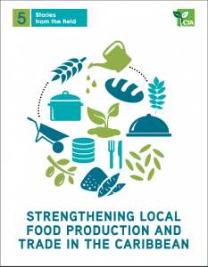

Highlights 2017: Caribbean Cuisine Gains Momentum

Caribbean cuisine closes the year on a high note
Policymakers, the private sector and Chefs are elevating Caribbean cuisine to new heights, ensuring that 2017 was a landmark year for linking food, tourism, trade and agriculture in the region. Chefs4Dev highlights the key developments that took place and brings insights on what 2018 may hold.
Gastronomy is the new buzzword in the Caribbean, a region more frequently characterised by its lively music and warm beaches. Now everyone, from ministers to marketers want to put the region’s cuisines in the spotlight. This is part of an effort to capture the increasing popularity of Caribbean food and food products, and to create new economic opportunities through cuisine, which could benefit various sectors in the region, particularly tourism, agriculture and health and have a direct impact on farmers’ income.
Food is big business in the Caribbean, a region that is estimated to import around $4 billion worth of edible products per year. This high level of imports of processed food has contributed to the increasing rate of nutritional problems faced by the Caribbean’s population, including heart disease, diabetes and overweight and obesity. Caribbean governments and policymakers have recognised this issue, and various approaches are being developed and policy measures adopted in conjunction with other partners.
Launch of the Caribbean Culinary Alliance (L-R: Chef Anton Doos of St Croix, Chef Peter Edey of Barbados, Chef Stephan Durand of Haiti and Chef Jacqui Tyson Neiderhauser of Jamaica) Copyright: Daily Nation Barbados
Translating this momentum into action has been an important priority for the Inter-American Institute for Cooperation on Agriculture (IICA) in the Caribbean, which is a long-standing partner of CTA in bringing this agenda forward and raising awareness of new opportunities for local actors involved in the food industry. Ena Harvey, the organisation’s agritourism expert and Barbados office representative, has led an impressive programme to promote agritourism development in the region, with a growing emphasis on cuisine as a medium to link agriculture with tourism sectors. IICA has collaborated and worked in partnership with national governments and regional organisations.
These efforts have culminated with the launch of the Caribbean Culinary Alliance by IICA and CTA together with renowned Caribbean chefs – including Chef Peter Edey from Barbados, Chef Stephan Durand from Haiti, Chef Anton Doos and Chef Jacqui Tyson Neiderhauser from Jamaica who form its Core Team. Support will be provided by IICA, CTA, CHTA (Caribbean Hotel and Tourism Authority) and CTO (Caribbean Tourism Organisation). The launch took place in August 2017 during the Caribbean Junior Culinary Conference (CJCC) in Barbados.
Chef Peter Edey sensitising the Brussels-based development community on the need to use local products and promote Caribbean cuisine
“The goal of the CCA is to unite culinary professionals across the Caribbean region in a common dedication to personal and professional excellence, and the growth and development of the Caribbean as a food tourism destination,” said Ena Harvey about the Alliance.
Important Opportunities for Caribbean Economy
Cuisine is seen as one area where the Caribbean can capitalise on a growing market in order to create new opportunities for business development, develop a strong cultural product, and stimulate demand for local products. According to the World Food Travel Association, global food tourism alone is worth $150 billion per year, and is slated to continue growing in the future.
The CCA will take advantage of existing programmes and initiatives that have been successful at showcasing Caribbean cuisine and opportunities for intersectoral linkages for development, such as the CHTA’s annual Taste of the Caribbean, the annual CJCC, existing national culinary associations and the Chefs for Development platform, which is facilitated by CTA on behalf of various partners.
The past year has also been a successful one for Caribbean cuisine at the national level, particularly in Jamaica, which is seeking to establish itself as a leading food tourism destination. An important step in this direction has been the launch on May of the country’s first Gastronomy Centre at Devon House where the Minister of Tourism expressed a desire that the Centre will be an attraction for tourists and locals alike to discover and enjoy Jamaican cuisines. “We are going to be establishing here, the first Gastronomy Club, and we will be building a special kitchen which will be marketed to visitors across the world to come to Devon House to cook,” he said, “So, you can bring your family on a Sunday afternoon, cooking with fresh ingredients from the farmers market we will be building.”
Supporting Caribbean Youth and Culinary Talent
A notable theme emerging from the movement to establish Caribbean cuisine at the global level has been the strong emphasis on young professional development within the culinary and hospitality industries. The Alliance has begun by enlisting champions from the CJCC competing teams who will work with the Alliance on certification and apprenticeships for young chefs. This is in line with the core mandate of the Alliance to provide support for the education, training, certification and accreditation of chefs, mixologists and culinary professionals through NVQ and CVQs in the American Culinary Federation and the World Association of Chefs Societies. Additionally, the Alliance will facilitate internships, online courses, scholarships, apprenticeships, placements and other networking and knowledge sharing opportunities across Latin America, the Caribbean and internationally.
Chef Dane Saddler, Executive Chef, Caribbean Villa Chefs, Barbados who focuses on offering healthy convenient options to the health conscious market
In December 2017 it was also announced that Jamaica would be introducing a gastronomy ambassador programme, where the winners of the Taste of Jamaica Culinary Competition would receive training in New York, and then undertake their duties as national Culinary Ambassadors. These activities are an important outcome of Jamaica’s Ministry of Tourism's Linkages Network and the Culinary Federation of Jamaica, whose mandate is to develop strategic partnerships and linkages along Jamaica’s culinary value chain that supports the development of a defined tourism based gastronomy product and to support development of a compliant gastronomy sector that can be packaged and marketed globally.
Great Ambitions in 2018 for Caribbean Cuisine
It is undoubtable that 2018 will be an equally promising year for Caribbean cuisine. The CCA has strong ambitions to grow its membership and gain endorsement and recognition from strategic regional institutions such as the CARICOM Secretariat, the CTO, the CHTA and international agencies, CHTA Taste of the Caribbean and the Caribbean Week of Agriculture. Underlying these ambitions will be extensive fundraising efforts, which will help drive revenue to support the growth of the Alliance.
For its part, Jamaica will launch in March 2018 The Jamaica Blue Mountain Coffee Festival as “Jamaica’s flagship coffee festival, offering an immersive experience from farm to cup (and plate), while demonstrating Jamaica’s rich tradition of coffee production in the Blue Mountain region.” Additionally, the Government also plans to identify locations for further Gastronomy Centres throughout the island, and to begin the Beyond Jerk: Island wide Project, which will showcase Jamaica’s leading and rising culinary talent and mixology stars, to draw attention to the island’s culinary scene and establish Jamaica’s cuisine as a firm attraction for tourists.
Sources and More Information:
- A year of culinary success
http://bit.ly/2Df5LD3 - Jamaica Ministry of Tourism “The Jamaica Gastronomy Network”
http://bit.ly/2kA4AWY
- Bartlett announces gastronomy ambassador programme
http://bit.ly/2kxOrkP
- Devon House Launched as Jamaica’s First Gastronomy Centre
http://bit.ly/2CQPanR
- Caribbean Culinary Alliance Formed
http://bit.ly/2kUzZTa
Read the CTA publication “Strengthening local food production and trade in the Caribbean” http://bit.ly/2j0iQHF
Recap the Brussels Briefing on “Agribusiness development in SIDS: the potential of tourism-related markets” http://bit.ly/2dcZw9Z
Discover more about the role of Chefs using cuisine to link agriculture with tourism, on Chefs for Development website http://chefs4dev.org/
Don't Miss:

New Opportunities through Caribbean foods and flavours
CTA’s new publication, titled "Strengthening local food production and trade in the Caribbean", explores the transformation of Caribbean food and agriculture systems through improved production and trade. It showcases farmers, agribusinesses, chefs and policymakers who are working and collaborating across islands and value chains to create opportunities, and enhance earnings and growth. Read More